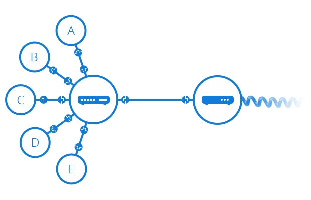
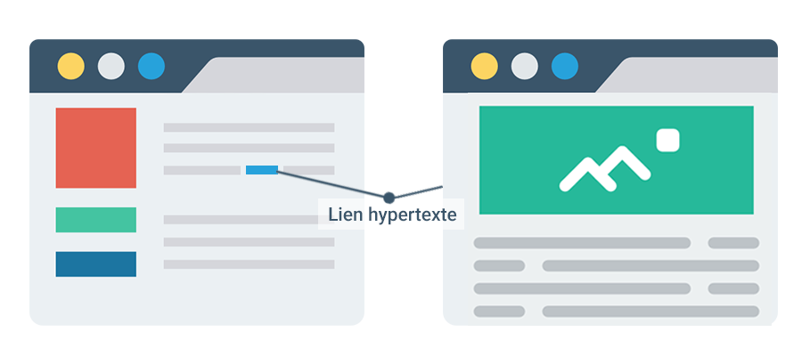
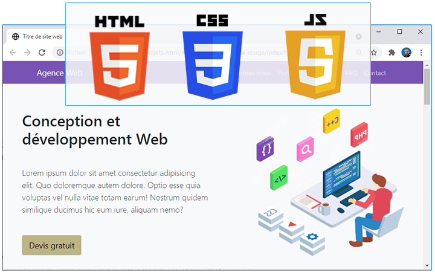
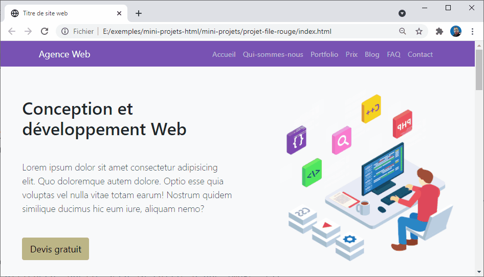
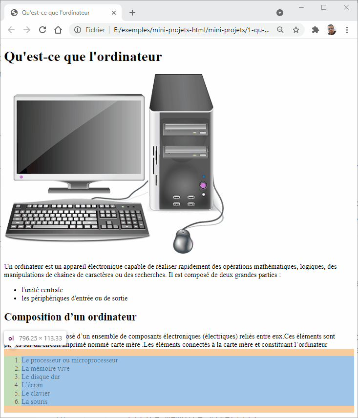

Initiation à HTML5 et CSS3
Bienvenue dans cette formation d'initiation à la création des sites web avec HTML5 et CSS3.
La formation a pour but de fournir aux développeurs web débutants tout ce qu'ils ont besoin pour commencer à développer des sites web simples.

Si vous débutez complètement, le développement web peut être un réel défi. Notre but est de simplifier suffisamment le sujet pour que vous appreniez facilement, tout en vous fournissant assez de détails pour que vous soyez autonome.
Vous devriez vous sentir chez vous, que vous soyez
- un étudiant apprenant le développement web,
- un enseignant recherchant des supports de cours,
- un amateur ou quelqu'un qui souhaite simplement comprendre la manière dont fonctionnent le Web et ses technologies.
Ce que vous apprendrez
- Apprendre HTML5 à partir de zéro
- Apprendre CSS3 à partir de zéro
- Réalisation des projets du monde réel
- Création des pages responsive
Plan de la formation
La formation est diviser en cinq sections.
- Notion préliminaire
- Bien démarrer
- Les fondamentaux de HTML
- Les fondamentaux de CSS
- Réalisation de 6 mini-projets
Notion préliminaire
Dans la première section nommée notion préliminaire nous allons apprendre les notions d'internet et de web, puis nous allons découvrir les trois langages web : HTML5, CSS3 et JavaScript. Nous clôturerons la section par l'installation et découvert des outils dont nous avons besoin dans notre formation. La section comprend deux parties :
- Introduction au développement Web
- Installation des outils
Bien démarrer
L'apprentissage d'un langage informatique comprend plusieurs détails, qui rend l'apprenant incapable de suivre et apprendre les notions étudiées. C'est pour cette raison, j'aimerais commencer mes formations par la partie Bien démarrer qui nous donne juste l'essentiel pour apprendre comment ça marche la technique informatique. Ensuite, nous entamons les parties suivantes pour enrichir nos savoirs et compétences.
La section comprend deux parties :
- Bien démarrer avec HTML
- Bien démarrer avec CSS
Les fondamentaux de HTML
Dans la troisième section nous allons voir les fondamentaux de HTML comme par exemple la structuration d'un texte avec des liens et des images, la structuration d'un formulaire de saisie et la présentation des données sous forme d'un tableau. Nous terminerons la section par découvrir la sémantique des balises HTML.
La section comprend les parties suivantes :
- Notions de base de HTML
- Texte en HTML
- Lien et image
- Formulaire
- Tableaux
- Sémantique des balises HTML
Les fondamentaux de CSS
Dans la quatrième section nommée Les fondamentaux de CSS nous allons voir les parties suivantes :
- Notions de base de CSS
- Syntaxe : Modèle de boîte
- Syntaxe : Sélecteurs en CSS
- Positionnement avec Floats
- Positionnement avec Flexbox
- Positionnement avancé
- Responsive design
- Web typography
Réalisation de 6 mini-projets
Finalement, dans la cinquième partie nous allons réaliser les 6 mini-projets suivants :
- Mini-projet : Menu de navigation
- Mini-projet : Grid
- Mini-projet : Article d'un blog
- Mini-projet : Blog
- Mini-projet : Formulaire de contact
- Mini-projet : Page d'accueil
- Création d'un site web
Introduction au développement web
Dans cette partie de formation, nous allons
- découvrir ce que c'est qu'une page web et la notion d'internet et web.
- Ensuit, vous allez découvrir les trois langages web ( HTML, CSS et JavaScript) qui nous permet de construire une page web.
- Nous terminerons par voir l'importance d'apprentissage des langages web par rapport le développement web et les frameworks web.
Ces éléments théoriques ne sont pas strictement nécessaires pour commencer à faire du développement web dans un premier temps. Cependant, ils seront plus utiles pour mieux comprendre comment le Web fonctionne en arrière-plan.
Qu'est ce qu'Internet ?
Dans cette session, nous découvrons ce qu'est l'Internet et comment il fonctionne.
Extrait de la formation vidéo
Définition
L'Internet est l'épine dorsale du Web. Il s'agit de l'infrastructure technique qui soutient le Web.

De façon simple, l'Internet est un vaste réseau d'ordinateurs qui communiquent les uns avec les autres.
Comment fonctionne internet ?

Pour répondre à cette question, je vous propose de voir d'abord le fonctionnement d'un réseau entre deux ordinateurs, puis un réseau entre dix ordinateurs jusqu'à voir un réseaux entre les villes et les pays.
Réseau local : entre deux ordinateurs
Pour que deux ordinateurs puissent communiquer entre eux, ils doivent être liés soit par un lien physique (généralement par un câble Ethernet), soit par un lien sans fil (par exemple, via le WiFi). Tous ces types de connexions sont possibles sur les ordinateurs modernes.
Cette connexion entre deux ordinateurs s'appelle réseau local.

Réseau entre plusieurs ordinateurs
Un réseau n'est pas limité à deux ordinateurs. Vous pouvez y connecter autant d'ordinateurs que vous souhaitez, mais le tout se complique très rapidement. Ainsi, si vous voulez relier, disons, dix ordinateurs entre eux, vous aurez besoin de neuf prises sur chaque ordinateur et de 45 câbles !

Réseau entre plusieurs ordinateurs avec routeur
Afin de résoudre ce problème, chaque ordinateur du réseau est relié à un petit ordinateur bien spécial que l'on appelle routeur.

Ce routeur n'a qu'une seule fonction : tout comme un signaleur de gare de train, il s'assure que les messages transmis par un ordinateur donné se rendent au bon ordinateur destinataire. Ainsi, pour envoyer un message à l'ordinateur B, l'ordinateur A transmet d'abord le message au routeur, qui s'assure alors de transférer le message à l'ordinateur B et non à l'ordinateur C.
Vous voyez donc que lorsque nous ajoutons un routeur dans notre structure, notre réseau de dix ordinateurs ne requiert alors que de dix câbles, d'une prise par ordinateur et d'un routeur de 10 ports.
Un réseau de réseaux
Jusqu'ici tout est beau, mais comment fait-on pour relier des centaines, des milliers ou même des millards d'ordinateurs entre eux ? Bien évidemment, un seul routeur ne pourrait suffire pour tant de connexions. Cependant, si vous m'avez suivi attentivement, vous aurez constaté qu'un routeur n'est en réalité qu'un ordinateur. Serait-il alors possible de lier deux routeurs ? Oui, absolument, et en voici le résultat!
En liant les ordinateurs à des routeurs, puis les routeurs entre eux, nous avons la capacité d'étendre le réseau indéfiniment.
Un réseau de réseaux avec fournisseur d'accès
Un tel réseau s'apparente de près à ce que nous appelons l'Internet, mais il y a un élément manquant. Ce réseau a été conçu pour répondre à nos besoins personnels, mais d'autres réseaux existent également. Vos amis, vos voisins et plein d'autres gens peuvent avoir leurs propres réseaux d'ordinateurs. Cependant, il vous est plutôt impossible de brancher des câbles entre votre maison et le reste de la planète, alors que faire ?
Eh bien, il se trouve que votre maison est déjà câblée et liée aux réseaux téléphonique. L'infrastructure téléphonique, qui lie déjà votre maison au reste de la planète, répond parfaitement à nos besoins. Afin de lier notre réseau à l'infrastructure téléphonique, nous devons utiliser un appareil spécialisé appelé modem. Ce modem convertit l'information de notre réseau en information décodable par l'infrastructure téléphonique et vice-versa.

Un réseau de réseaux avec fournisseur d'accès
Notre réseau est donc lié à l'infrastructure téléphonique. La prochaine étape consiste alors à transmettre avec succès nos messages au réseau cible. À cette fin, nous allons lier notre réseau à un Fournisseur d'accès à Internet (FAI).
Un FAI est une entreprise qui gère des routeurs qui sont liés entre eux et qui ont des droits d'accès aux routeurs d'autres FAI. Le message transmis par notre réseau est ainsi transporté à travers le réseau de FAI afin d'atteindre le réseau cible.
Voilà en quoi consiste l'Internet : il s'agit de toute cette infrastructure de réseaux
Localiser un ordinateur
Lorsque nous souhaitons transmettre un message à un ordinateur, nous devons préciser de quel ordinateur il s'agit. Par conséquent, chaque ordinateur lié à un réseau possède une adresse unique appelée « adresse IP » (où « IP » signifie Internet Protocol) qui sert à localiser l'ordinateur. Cette adresse est composée d'une série de nombres séparés par des points, par exemple : 192.168.1.3.
C'est une méthode très efficace pour les ordinateurs, mais les humains ont un peu plus de difficulté à retenir de telles adresses numériques. Afin de se faciliter la tâche, un libellé alphabétique, appelé nom de domaine, est souvent associé aux adresses IP. Par example, google.com est le nom de domaine associé à l'adresse IP 173.194.121.32. L'utilisation d'un nom de domaine est ainsi le moyen le plus facile d'atteindre un ordinateur via l'Internet.

L'Internet et le web

Vous aurez peut-être constaté que lorsque nous naviguons sur le Web avec un navigateur Web, nous utilisons un nom de domaine pour rejoindre un site web. Est-ce donc dire qu'Internet et Web réfèrent à une seule et même notion ? La réponse n'est pas si simple. Comme nous l'avons vu, l'Internet est une infrastructure technique qui lie des milliards d'ordinateurs entre eux. Parmi ces ordinateurs, certains ordinateurs (appelés serveurs Web) peuvent transmettre des messages décodables par les navigateurs Web. Ainsi, l'Internet est une infrastructure, alors que le Web est un service installer sur un serveur en utilisant l'infrastructure de l'Internet.
Références
Le fonctionnement de l'Internet
How the Internet Works in 5 Minutes
Qu'est-ce que le Web
Dans cette session, nous allons voir de façon simplifiée, ce que c'est le web et sa différence avec internet .
Extrait de la formation vidéo
Définition 1 : Web et page web
Vous pouvez voir le web comme un ensemble des pages d'informations publiés (accessible en public) dans plusieurs machines sur internet. Un tel page est appelé page web.
La caractéristique principale d'une page web est qu'il est écrit en format hypertexte qui nous permet de relier les pages web entre elles à l'aide des liens.

Document hypertexte et lien hypertexte
Un document texte est un ensemble d'informations écrites de façon linéaire, c'est-à-dire, une information après l'autre. Par contre, un hypertexte est un document ou plusieurs documents contenant des unités d'information liées entre elles par des liens.
Lorsqu'on consulte le lien, il nous amène à un autre document.

Ce système permet à l'utilisateur d'aller directement à l'unité qui l'intéresse d'une façon non linéaire.
Le lien dans un hypertexte est appelé : lien hypertexte.
Définition 2 : toile d’araignée
Le web est un système hypertexte public fonctionnant sur internet.
L’image de la toile d’araignée qui représente le web vient des hyperliens qui lient les pages web entre elles.

Le Web est l'abréviation de World Wide Web. il est aussi désigné par de nombreux abréviations et synonymes. Parmi les plus connues sont :
- WWW
- Toile d’araignée mondiale
- Toile mondiale
Page web et langage HTML
La page web est écrite en langage HTML (HyperText Markup Language) qui est un langage informatiques permettant de décrire le contenu d’un document (titres, paragraphes, disposition des images, etc.) et d’y inclure des hyperliens.
Un document HTML est un document texte brut structuré par des éléments. Les éléments sont encadrés par des balises ouvrantes et fermantes associées. Chaque balise commence et se termine par les caractères inférieur et supérieur (<>)

Un fichier HTML est généralement enregistré avec une extension .htm ou .html.
Il est mis à disposition par un une machine connecté à internet appelé serveur, et le rendu est réalisé par un navigateur Web.
Différence entre Web et Internet
Internet est un réseaux qui relié les ordinateurs entre eux par contre le Web est une fonction ou une façon d'utiliser internet pour consulter des milions des pages web en relation avec des hyperliens.
Références
Comment fonctionne le Web
Dans cette session de formation nous allons découvrir ce que se passe quand on affiche une page web.
Communication client serveur
Sur internet, l'affichage d'une page web nécessite l'intervention de deux machine. La machîne A qui affiche la page Web et la machine B qui serve la page à la machîne A.
Dans cette communication, on dit que la machîne A est le client et la machîne B est le serveur. on parle ici d'une communication client-serveur.
Dans la machine A, le navigateur joue le rôle de client, et dans la machîne B, une application dit serveur web joue le rôle de serveur.
Adresse IP
Chaque machine dans le réseaux internet est identifié par une adresse IP. Par exemple la machine A: est identifier par l'adresse : 192.168.1.19 et la machine B par l'adresse : 185.199.108.153
Nom de domaine
Pour consulter la première page web de notre site internet, nous avons utilisé le nom codeur-academy.com. Ce nom s'appelle nom de domaine.

Ce nom permet de situer le serveur sur internet grâce à un équipement, appelé DNS (Domain Name System) qui permet d’associer une adresse IP un nom de domaine.
Les noms de domaine ont été conçus pour simplifier l’utilisation de l’internet : il est plus facile de retenir et taper un nom de domaine qu’une adresse IP.
Pour récupérer l'adresse IP de notre serveur Web, vous pouvez utiliser la commande ping sur la console.
PS C:\Users\essarraj> ping codeur-academy.com
Envoi d’une requête 'ping' sur codeur-academy.com [185.199.108.153] :
Réponse de 185.199.108.153 : octets=32 temps=114 ms TTL=52
Réponse de 185.199.108.153 : octets=32 temps=82 ms TTL=52
Protocole de communication
Pour communique deux ordinateur sur internet nous avons besoin d'un protocole de communication. Il définisse le language et les règle de communication entre le clients et le serveurs.
Un exemple d'un protocole de communication dans notre vie réel est le code de la route. c'est un ensemble des règles relatif à l'utilisation des voies publiques.
Par exemple, un carrefour à feux tricolores est commandé par un contrôleur de feux, appareil électronique de contrôle/commande. Les feux sont généralement déclinés à partir de deux couleurs de base : le rouge pour fermer, le vert pour ouvrir. Le jaune-orangé est également utilisé et sert à signaler le passage du feu vert au feu rouge.

Pour la consultation de la page web, les deux ordinateur A et B ont utilisé le protocule http que nous allons découvrir dans cette session de formation.
Numéro de Port
Dans un réseau nous pouvons installer plusieurs application serveur comme le serveur Web, avec un seul adresse IP. Pour que cela soit possible, la notion de Port est inventé. Comme ça, pour demander le service web dans la machîne B nous devons déterminer le numéro du port de service Web qui prend la valeur par défaut : 80.

Échange des ressources
Une ressource du World Wide Web est une entité informatique (texte, image, vidéo, fichier PDF, ..).
Le client et le serveur peuvent s'échanger ces ressources. Dans la plupart des cas ces échanges ne sont pas "symétriques" : en effet le client va souvent se contenter de demander des ressources (fichiers contenant du texte, photos, vidéos, sons...) à l'ordinateur serveur.
Le serveur va contenter de fournir les ressources demandés à tous les ordinateurs client qui ont fait la demande.

Protocole - HTTP
HTTP (pour HyperText Transfer Protocol) est le protocole de communication utilisé pour transférer les ressources du Web.
Chaque ressource fait l'objet d'un échange demande/réponse entre le client et le serveur.
En HTTP, la communication tourne autour d'un concept appelé requête-réponse. Le client envoie au serveur une requête pour faire quelque chose et le serveur envoie en retour une réponse au client disant si oui ou non il est en mesure de faire ce que le client lui demande.
HTTPS est la combinaison du HTTP avec une couche de chiffrement. Il permet au visiteur de vérifier l'identité du site web auquel il accède, grâce à un certificat d'authentification
URL - adresse web
Une URL (pour Uniform Resource Locator, signifiant littéralement « localisateur de ressource uniforme ») est une chaîne de caractères décrivant l’emplacement d’une ressource.
Elle contient généralement dans l’ordre :
- le nom du protocole,
- un deux-points (:),
- deux barres obliques (//),
- un nom d’hôte,
- une barre oblique (/),
- et un chemin composé de texte séparés par des barres obliques.
https://codeur-academy.com/index.html
Comment fonctionne le Web
Lorsque vous saisissez une adresse web dans votre navigateur :
- le navigateur demande l'adresse IP à un serveur spécial nommé "DNS".
- le navigateur envoie une requête HTTP au serveur pour lui demander d'envoyer une copie du site web au client. Ce message, et les autres données envoyées entre le client et le serveur, sont échangés par l'intermédiaire de la connexion internet.
- si le serveur accepte la requête émise par le client, le serveur envoie un message « 200 OK » au client qui signifie : « Pas de problème, tu peux consulter ce site web, le voici ». Ensuite le serveur commence à envoyer les fichiers du site web au navigateur.
- le navigateur affiche la page web sur votre écran

Références
- Protocole de communication
- Client-serveur
- Modèle client / serveur
- HTTP — an Application-Level Protocol
- Hypertext Transfer Protocol
- Comprendre les URL et leur structure
- How does the web work?
- Le fonctionnement du Web
- HTML
- What is a URL?
- What is a Domain Name?
- Un aperçu de HTTP
Langages Web : HTML, CSS et Javascript

HTML, CSS et JavaScript sont 3 langages différents. Ensemble, ils permettent de créer des pages web et chacun contribue à des aspects particuliers d'une page web moderne. Dans cet session de formation, nous verrons comment chacun des langages contribue à la réalisation d'une page web.
C'est quoi HTML
HTML est un acronyme qui signifie Hypertext Markup Langage. En bon français on pourrait dire langage de balisage d'hypertexte. HTML est très utile pour expliquer à une machine quelle est la fonction le sens sémantique des différents éléments d'une page : les titres, les paragraphes, les listes, les citations et ainsi de suite. Il permet aussi d'intégrer des images, du son et de la vidéo et la chose la plus importante : des liens entre différentes pages.

HTML sert donc à organiser le contenu d'une page web. À lui tout seul, il ne permet pas de créer une belle présentation ni d'offrir des fonctions interactives. C'est la raison pour laquelle il y a d'autres langages.
C'est quoi CSS
CSS est un autre acronyme qui signifie Cascading Style Sheet. On pourrait traduire cela par feuille de style en cascade. Le mot clé dans cette expression est style. Ce langage permet de changer la présentation du contenu d'un document HTML et tout comme ce dernier, ce n'est pas un langage de programmation.
La fonction principale de CSS est de rédiger des règles qui déterminent de la présentation des éléments d'une page web. Qu'est-ce qui sera centré, qu'est-ce qui sera en caractère gras, comment un titre de page s'affichera, quelle sera la taille d'une image, etc.
Si HTML a pour fonction de structurer le contenu d'une page web, CSS s'occupe de la présentation de ce contenu. Et bien que CSS permettent aussi le mouvement des objets (fondu, transition, déplacement, etc.), les interactions sophistiquées se font à l'aide d'un troisième langage.

Qu'est-ce que JavaScript
Contrairement à HTML et CSS, Javascript est un langage de programmation. Et contrairement à ce qu'on pourrait croire à cause de son nom, JavaScript n'a rien à voir avec Java.
JavaScript est un langage de programmation qui s'exécute du côté client. Ce qui veut dire que le programme est donné par le serveur en même temps que la page web et c'est l'ordinateur du visiteur (par l'entremise du navigateur) qui éxécutera le programme.
Je vous donne un exemple d'un réalisation très simple d'une calculatrice avec Javascript, just pour avoir une idée de ce que vous pouvez faire avec Javascript.

Le programme permet de réaliser la somme et la soustraction de deux nombres.
HTML et CSS ne sont pas des langages de programmation
HTML et CSS ont une structure et une syntaxe et ils sont cohérents mais contrairement à Javascript, ce ne sont pas des langages de programmation. Les langages de programmation permettent l'utilisation d'algorithme.
Ensemble, HTML, CSS et Javascript permettent de créer des pages web qui se chargent rapidement et qui, avec un navigateur récent, offre une expérience riche et très interactive.
Références
Quelle est la différence entre HTML, CSS et JavaScript
Différence entre HTML, CSS et JavaScript
Quelle est la différence entre HTML, CSS et JavaScript ?
Qu'est ce que le HTML ?
HTML (HyperText Markup Language) n'est pas un langage de programmation : c'est un langage de balisage qui sert à indiquer au navigateur comment structurer et afficher une page web visitée.

Le HTML se compose d'une série d'éléments avec lesquels vous pouvez encadrer, envelopper ou baliser différentes parties du contenu pour les faire apparaître ou agir d'une certaine manière.

Par exemple, dans la page web d'exemple, nous avons envelopper ou baliser le texte qui décrire les deux parties d'un ordinateur par une balise qui indique au navigateur de les afficher comme une liste.
Une balise encadrante peut transformer une petite partie de contenu en liste ordonnée, mettre des mots en gras, etc.

Exemple d'une balise
Par exemple, prenons la phrase suivante :
Qu'est-ce que l'ordinateur

Si nous voulons que cette ligne se présente comme un titre d'un article, nous pouvons dire qu'il s'agit d'un titre de niveau 1 en l'enveloppant d'un élément de titre de niveau 1 ( <h1> ) :
<h1>Qu'est-ce que l'ordinateur</h1>

Pratique - élément : h1

Les éléments HTML sont insensibles à la casse
Les éléments en HTML sont insensibles à la casse, c'est-à-dire qu'ils peuvent être écrits en majuscules ou en minuscules.
Par exemple
<h1>Qu'est-ce que l'ordinateur</h1>
<H1>Titre 2 </H1>

un élément <h1> peut être écrit <h1> ou <H1>. et il fonctionnera parfaitement. La meilleure pratique, cependant, est d'écrire tous les éléments en minuscules pour des raisons de cohérence et de lisibilité.
Pratique - insensibilité à la casse
Références
Anatomie d'un élément HTML
Les objectifs de cette session de formation sont les suivants :
- Découvrir les différents parties d'un élément HTML,
- Comprendre le rôle d'un attribut pour un élément HTML
- Apprendre à utiliser les attributs dans un élément HTML
- Apprendre à imbriquer un élément dans un autre élément,
- Découvrir ce que c'est un élément vide.
Regardons notre élément paragraphe d'un peu plus près :

Constatez qu'il est composé de trois parties :
- La balise ouvrante : il s'agit du nom de l'élément (dans ce cas, p), encadré par un chevron ouvrant (<) et un chevron fermant (>). Elle indique où l'élément commence ;
- La balise fermante : c'est la même que la balise ouvrante, sauf qu'elle comprend une barre oblique (/) avant le nom de l'élément. Elle indique la fin de l'élément ;
- Le contenu : il s'agit du contenu de l'élément. Dans notre cas, c'est le texte : "Un ordinateur est un appareil électronique" ;
Pratique - Création d'un élément HTML
Attributs
Les éléments peuvent aussi avoir des attributs, qui comme suit:
<p id="définition" >Un ordinateur est un appareil électronique</p>

Les attributs contiennent des informations supplémentaires sur l'élément sans qu'elles n'apparaissent dans le contenu réel. Dans ce cas, l'attribut id vous permet de donner à l'élément un nom d'identification qui peut ensuite être utilisé pour cibler l'élément afin de lui attribuer un style d'affichage en utilisant le code CSS par exemple.
Pour créer un attribut, il faut :
- insérer un espace entre cet attribut et le nom de l'élément ;
- donner un nom à l'attribut, puis ajouter le signe égal ;
- donner une valeur à l'attribut, entourée par des guillemets d'ouverture et de fermeture.
Éléments vides
Tous les éléments ne suivent pas le modèle ci-dessus d'ouverture de balise, puis contenu, puis fermeture de balise. Certains éléments ne sont composés que d'une balise. Ils servent généralement à insérer / incorporer quelque chose dans le document à l'endroit où ils sont mis. Par exemple, l'élément <img /> ou <img> insère une image dans une page à l'endroit où il est placé (la balise auto-fermante <img /> est à privilégier) :
<img src="image.png" />

Pratiquement la barre oblique peuvent ne pas être utiliser, dans une balise vide, dans notre exemple, l'image va s'afficher correctement sans la base oblique, mais la syntaxe de la balise auto-fermante est privilégiée.
<img src="image.png" >
Pratique - Éléments vides
Exemple d'un élément HTML : input
Avant de continuer notre anatomie d'un élément HTML, je vous propose de découvrir un nouveau élément qui s'appelle input. Il vous permet d'insérer une zone de saisie de texte dans votre document HTML.
Nous allons utiliser deux parmis ces attributs : le première s'appelle type qui précise la nature de la zone de saisie, dons notre cas text qui indiquer la saisie de texte. Le deuxième attribut s'appelle disabled, qui vous permet de désactiver la saisie de texte.
<input type="text" />
<input type="text" disabled="disabled" />

Les attributs booléens
Vous verrez parfois des attributs sans valeur définie : c'est tout à fait autorisé. Ils sont appelés attributs booléens ; ils ne peuvent avoir qu'une seule valeur, généralement la même que le nom de l'attribut. Par exemple, l'attribut disabled peut s'écrit sans valeur. dans ce cas il prend la valeur par défaut qui généralement le non de l'attribut.
<input type="text" />
<input type="text" disabled />
Exemple d'élément : attribut placeholder
Dans la partie suivante, nous allons voir l'attribut placeholder de l'élément input qui permet d'afficher des informations sur la valeur à saisir dans la zone de texte.
Par exemple, nous avons afficher à l'utilisation une information sur la valeur qu'il peut saisir dans la zone de saisie. Nous avons lui demander de saisir son prénom en.
<input type="text" placeholder="Votre prénom" >

Omettre des guillemets autour d'attribut
Si vous regardez ce qui se passe sur le Web, vous rencontrerez tous types de styles de balises étranges, y compris des valeurs d'attribut sans guillemets. C'est permis dans certaines circonstances, mais cela va briser votre balisage dans d'autres.
Par exemple, si nous voyons notre exemple, nous pourrons écrire la valeur de l'attribut type sans guillemets et ça va s'exécuter correctement dans le navigateur.
<input type=text placeholder="Votre prénom" >
Cependant, si nous ajoutons l'attribut placeholder dans ce même style, c'est à dir sans les guillemets, cela devient incorrect :
<input type=text placeholder="Nom" >
<input type=text placeholder=Votre prénom >

En effet, le navigateur interprétera mal la balise, pensant que l'attribut placeholder est en fait deux attributs — un attribut placeholder avec la valeur « Votre » et deuxième attributs booléens, « prénom ». Ce n'est évidemment pas ce qui était prévu et cela provoquera des erreurs ou un comportement inattendu dans le code, comme on le voit dans l'exemple.
Nous vous recommandons de toujours inclure les guillemets afin d'éviter ce type de problèmes, mais aussi pour que le code soit plus lisible.
Guillemets simples ou doubles ?
Dans cette session de formation, vous remarquerez que les valeurs des attributs sont toutes entre des guillemets doubles (" "). Vous pouvez cependant voir des guillemets simples (' ') dans le code HTML de certaines personnes. C'est purement une question de style, et vous êtes libre de choisir la solution que vous préférez. Les deux balise suivantes sont équivalentes :
<input type="text" placeholder="Votre nom" >
<input type="text" placeholder='Votre nom' >

Vous devez cependant vous assurer de ne pas les mélanger. Ce qui suit n'est pas correct :
<input type="text" placeholder="Votre nom' >
<input type="text" placeholder='Votre nom' >

Eléments imbriqués
Vous pouvez mettre des éléments à l'intérieur d'autres éléments — cela s'appelle l'imbrication. Si vous voulez mettre en valeur le texte "éléctronique" vous pouvez le mettre dans l'élément <strong>, pour qu'il soit fortement mis en valeur :
<p>Un ordinateur est un appareil <strong>électronique</strong></p>

Vous devez toutefois vous assurer que vos éléments sont correctement imbriqués : dans l'exemple ci-dessus, nous avons ouvert l'élément p en premier, puis l'élément strong, donc nous devons fermer l'élément strong d'abord, puis l'élément p. Ce qui suit est incorrect :
<p>Un ordinateur est un appareil <strong>électronique</p></strong>
Les éléments doivent être ouverts et fermés correctement afin d'être clairement à l'intérieur ou à l'extérieur l'un de l'autre. Si les balises se chevauchent comme dans l'exemple ci-dessus, votre navigateur web essaiera de deviner ce que vous vouliez dire, et vous pourrez obtenir des résultats inattendus.
Conclusion
Voilà tous pour cette session de formation. Nous avons vu les trois composant d'un élément HTML
Références
Les bases du HTML Commencer avec le HTML
Références Français
Apprendre le HTML : guides et didacticiels
Références anglais
https://www.internetingishard.com/html-and-css/